☰
Menu
Beranda
Profil Nagari
Wali Nagari
Galeri
Kontak
Nagari Sikabu
Beranda
Profil Nagari
Wali Nagari
Galeri
Kontak
Galeri Kegiatan KKN
Penyuluhan Kesehatan Masyarakat
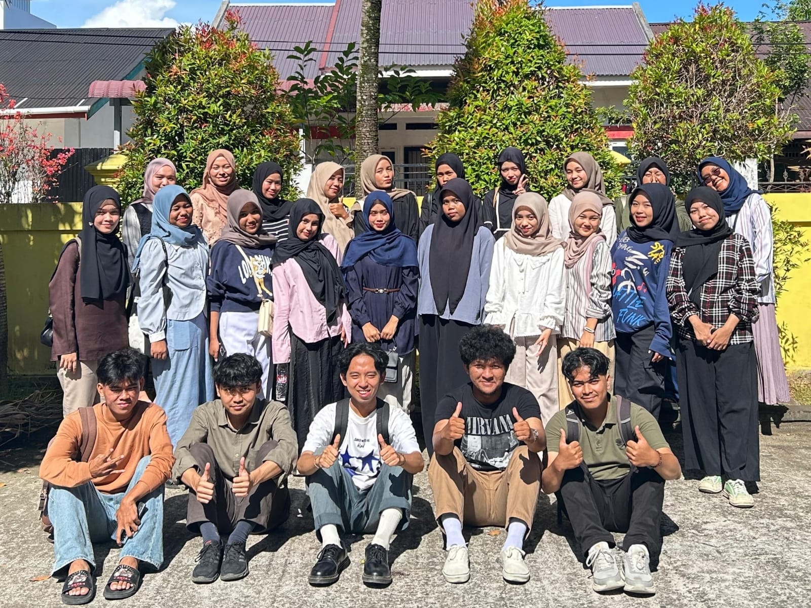
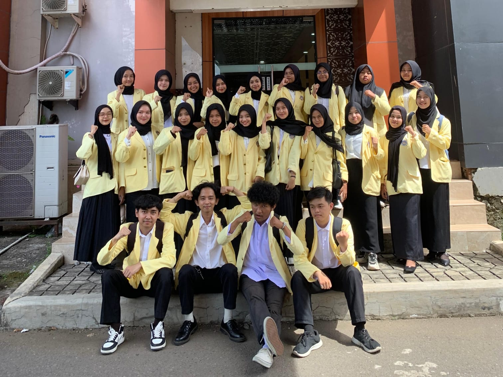 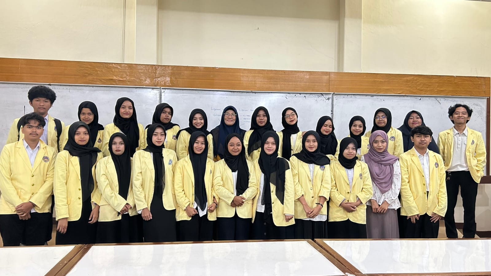 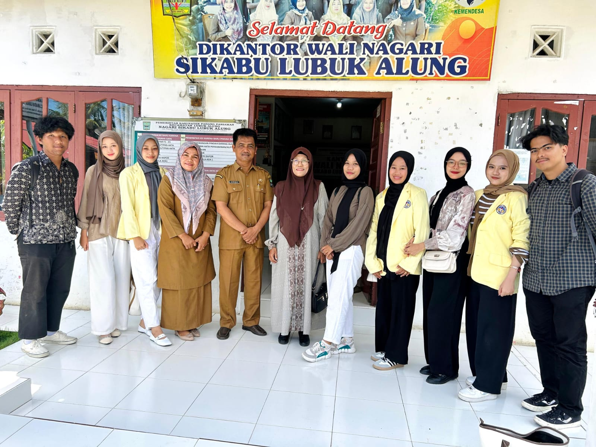 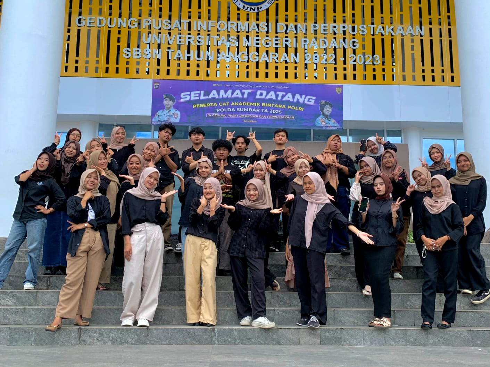
Pendidikan dan Literasi Anak
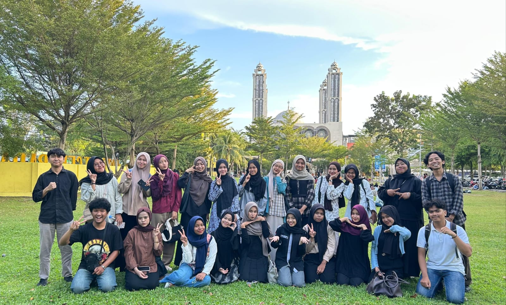
Video dokumentasi tersedia juga di
YouTube KKN Nagari Sikabu
.
 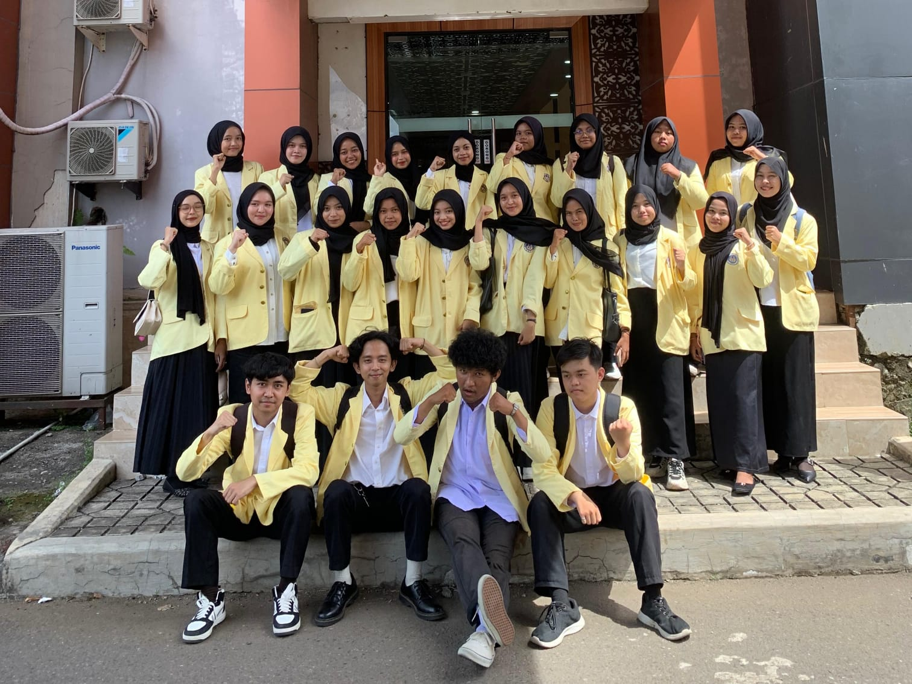
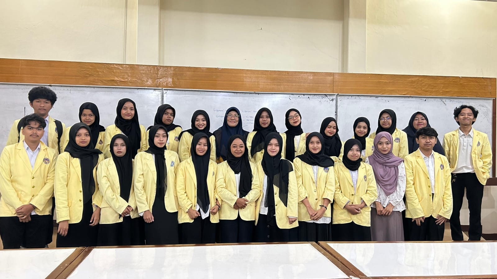
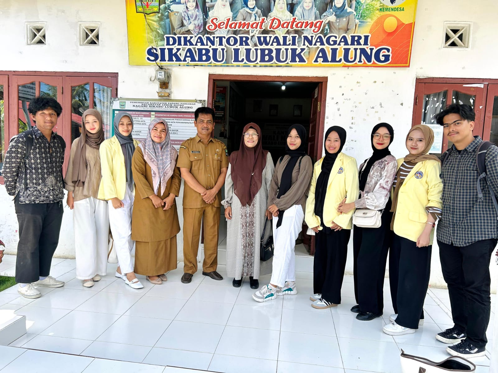
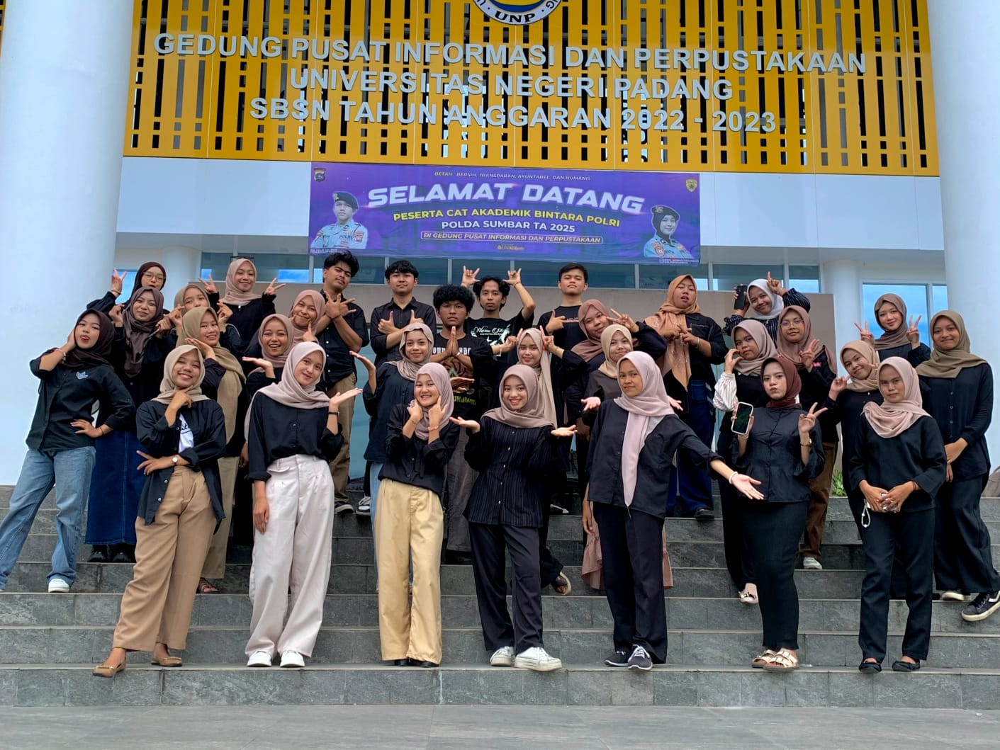
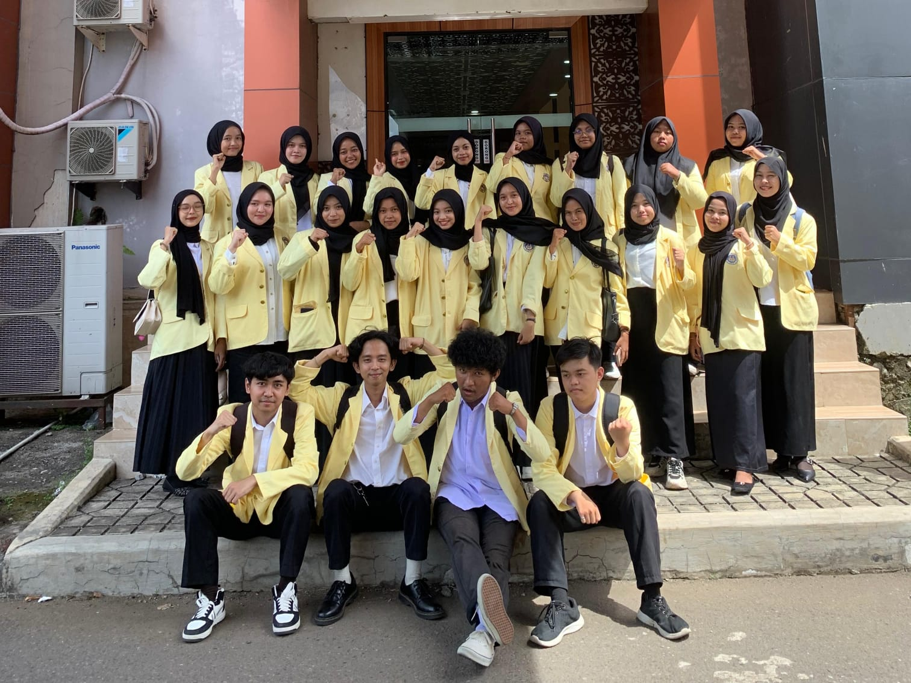
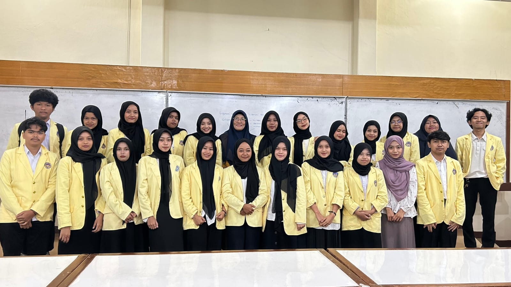
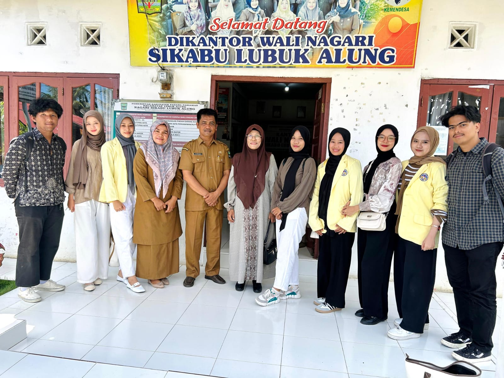
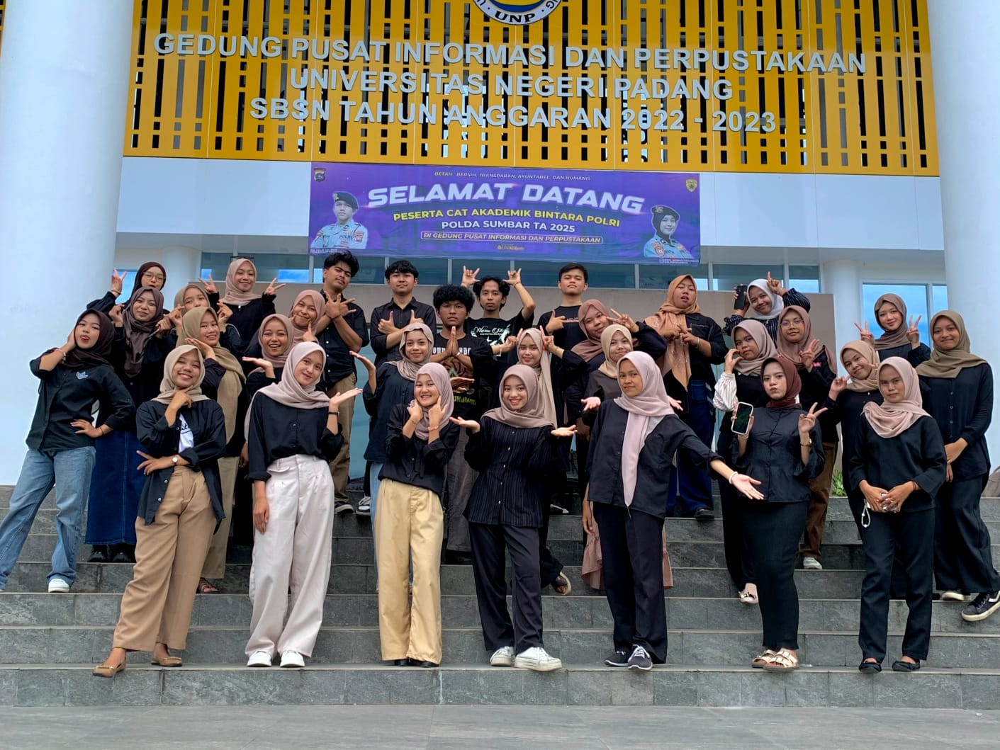